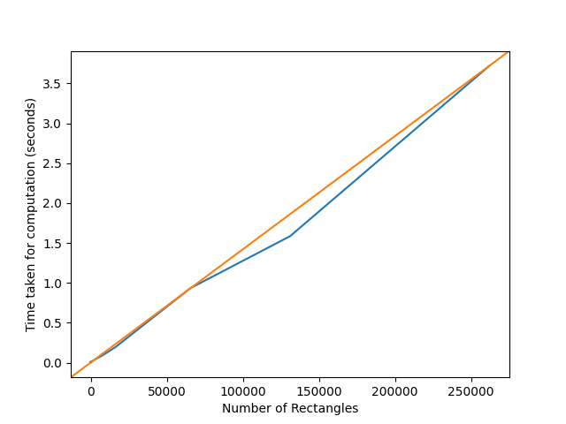
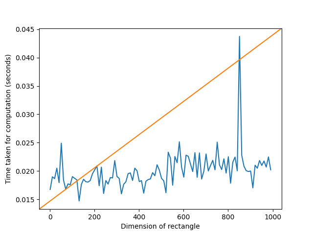
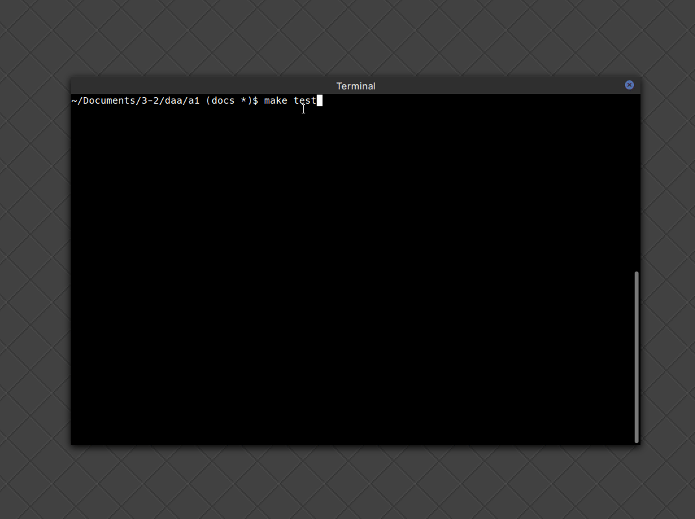

|
CS F364 Design and Analysis of Algorithms Assignment 1
Divide-and-Conquer algorithm to find the measure and countour the union of n iso-rectangles.
|
The algorithm described in the paper should run in O(nlogn) where n is the number of rectangles. Below, we describe the time and space complexities of our algorithm.
Our implementation of the algorithm appears to be O(n*n). This is because sub-algorithms like partition have been implemented in O(n*n), making the overall time complexity to be also O(n*n).
As the number of rectanlges grow, the time taken by the algorithm also grows in O(n*n) time. Below is a plot that illustrates this. We ran the algorithm for rectangles placed in a matrix-like figure, with half of the width overlapping with the adjacent rectangles. We stress tested the algorithm for number of rectangles ranging from 1 to 100,000.

Here is the data used to plot the graph, the first column is the number of rectangles, and the second column is the time taken ( in seconds ):
The algorithm's time complexity does not appear to depend reliably on the dimensions of the input rectangles. Below is a plot that illustrates this.

A testing script was written to automatically check the implementation for correctness for inputs of various sizes. Here is a demonstration of the script in action:

The research paper presents the complete algorithm ( for calculating measure and contour ) as an extension of a common algorithm called STRIPES. The stripes algorithm itself depends on two sub algorithms - copy and blacken.
Divide and Conquer
The main algorithm used in the paper, STRIPES is uses the divide-and-conquer method. It recursively divides the problem into two smaller parts, and then combines the solution to solve the original problem.
However, the paper does not any information about optimal implementation of several smaller algorithms used such as partition which are expected to be implemented in O(n). However, we found it difficult to do it in O(n) and our initial implementation was O(n*n) which we later managed to reduce to O(nlogn).
The paper solves the following problems:
We faced several problems while implementing the algorithm. The major problem was in understanding the research paper. This is because the explaination of the algorithm was mostly in textual manner and a lot of the terminology was unfamiliar to us. Also, the paper gives only a formal descreption of the algorithm, and no examples were provided, that would have helped us to understand it.
1.8.17